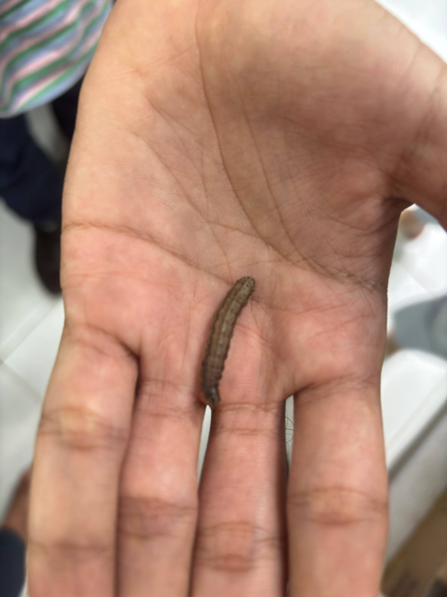
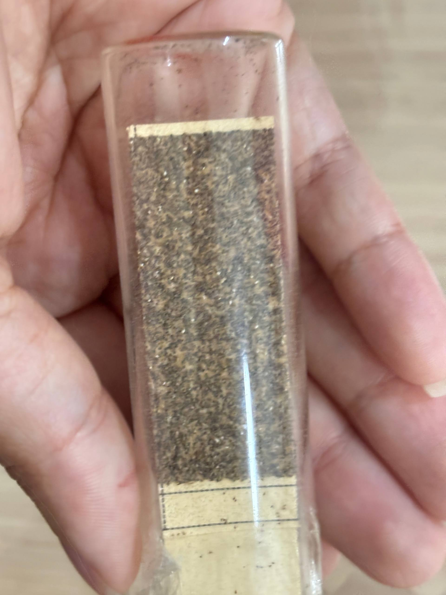
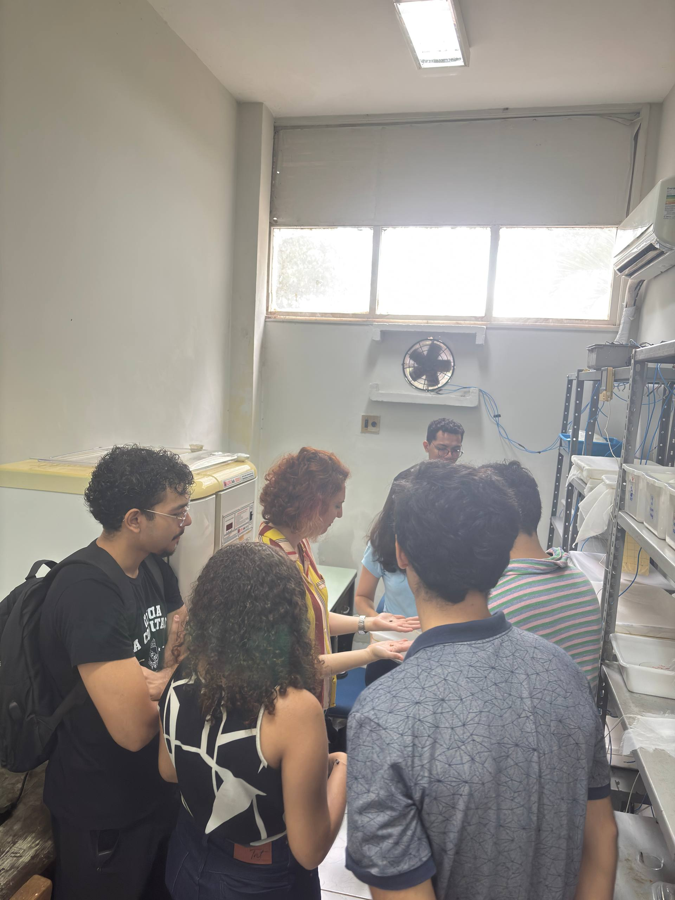

Nossa equipe visitou o Laboratório de Entomologia Aplicada (LEA) para entender a biologia das principais pragas agrícolas e fortalecer nossa tecnologia de monitoramento. Ver essas pragas de perto é um passo essencial para entender os padrões visuais e a biologia dos insetos na natureza.
Esse conhecimento é fundamental na hora de treinar nossos modelos avançados de visão computacional para a detecção precisa de anomalias e pragas direto no campo.




Com os dados e referências visuais coletados (desde o registro fotográfico dos insetos em frascos até o manuseio das lagartas), nossa equipe de desenvolvedores agora possui um banco de dados muito mais rico para calibrar a Inteligência Artificial e aprimorar a integração.